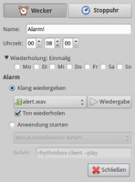
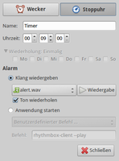
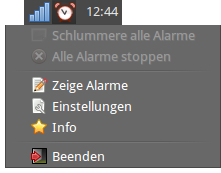

Alarm Clock
Dieser Artikel wurde für die folgenden Ubuntu-Versionen getestet:
Ubuntu 16.04 Xenial Xerus
Ubuntu 14.04 Trusty Tahr
Zum Verständnis dieses Artikels sind folgende Seiten hilfreich:
Alarm Clock  (früher Alarm Applet) ist ein einfach gehaltenes Programm, das über die Fähigkeiten eines simplen Weckers hinausgeht, ohne den Anwender mit unnötigen Funktionen zu überfordern. In der Praxis eine sehr nützliche Anwendung, die auf keinem Computer in der Standardinstallation fehlen sollte. Die einzige Ausnahme sind Rechner mit KDE, wo mit KTimer und KAlarm gleich zwei Weckprogramme zur Verfügung stehen.
(früher Alarm Applet) ist ein einfach gehaltenes Programm, das über die Fähigkeiten eines simplen Weckers hinausgeht, ohne den Anwender mit unnötigen Funktionen zu überfordern. In der Praxis eine sehr nützliche Anwendung, die auf keinem Computer in der Standardinstallation fehlen sollte. Die einzige Ausnahme sind Rechner mit KDE, wo mit KTimer und KAlarm gleich zwei Weckprogramme zur Verfügung stehen.
Weitere Alternativen sind im Abschnitt Links am Ende des Artikels zu finden.
Installation¶

Hinweis:
Wer das Software-Center nutzt, sollte beachten, dass sowohl hier als auch im Ubuntu Apps Store zwei gleichnamige Programme namens "Alarm Clock" enthalten sind. In diesem Artikel geht es um "Alarm Clock - Wake up in the morning (morgens aufwachen)".
Das Programm ist in den offiziellen Paketquellen enthalten. Folgendes Paket muss installiert [1] werden:
alarm-clock-applet (universe)
 mit apturl
mit apturl
Paketliste zum Kopieren:
sudo apt-get install alarm-clock-applet
sudo aptitude install alarm-clock-applet
PPA¶
Das "Personal Package Archiv" (PPA) [2] des Entwicklers Johannes H. Jensen bietet ggf. eine aktuellere Version an.
Adresszeile zum Hinzufügen des PPAs:
ppa:joh/ppa
Hinweis!
Zusätzliche Fremdquellen können das System gefährden.
Ein PPA unterstützt nicht zwangsläufig alle Ubuntu-Versionen. Weitere Informationen sind der  PPA-Beschreibung des Eigentümers/Teams joh zu entnehmen.
PPA-Beschreibung des Eigentümers/Teams joh zu entnehmen.
Damit Pakete aus dem PPA genutzt werden können, müssen die Paketquellen neu eingelesen werden.
Nach dem Aktualisieren der Paketquellen erfolgt die Installation wie oben angegeben.
Bedienung¶
 Bei Ubuntu-Varianten mit einem Anwendungsmenü erfolgt der Programmstart [3] über den Menü-Eintrag "Zubehör -> Alarm Clock".
Bei Ubuntu-Varianten mit einem Anwendungsmenü erfolgt der Programmstart [3] über den Menü-Eintrag "Zubehör -> Alarm Clock".
|  |  |
| Wecker | Stoppuhr |
Beim ersten Programmstart kann gleich ein Alarm gesetzt werden. Das Programm kennt zwei Arten von Weckfunktionen:
"Wecker" - zählt herunter, wieviel Zeit noch bis zu einem definierten Zeitpunkt bleibt (klassische Eieruhr). Zusätzlich kann eine Wiederholung gesetzt werden (für welchen Wochentag soll die Wiederholung gelten?).
"Stoppuhr" - zählt hoch, wieviel Zeit seit einem bestimmten Ereignis vergangen ist (wann sind die Nudeln fertig?)
Die akustische Erinnerung erfolgt entweder durch das Abspielen einer selbst festgelegten Audiodatei (beispielsweise aus /usr/share/sounds/) oder den Start des Lieblings-Audio-Players. Da es durchaus passieren kann, dass die Audioausgabe dummerweise gerade stummgeschaltet ist, wird zusätzlich der Benachrichtigungsdienst genutzt, um eine optische Anzeige auszugeben.
Nach dem Einstellen eines oder mehrere Alarme minimiert sich Alarm Clock in das Panel. Die weitere Benutzung erfolgt über einen Linksklick  auf das Panelsymbol. Alarme können z.B. unterbrochen und auf einen späteren Zeitpunkt verschoben werden (Schlummern).
auf das Panelsymbol. Alarme können z.B. unterbrochen und auf einen späteren Zeitpunkt verschoben werden (Schlummern).
Einstellungen¶

Auch die Programmeinstellungen sind über einen Linksklick auf das Panelsymbol zu erreichen. Dazu zählen derzeit nur der automatische Start nach der grafischen Anmeldung und eine Countdown-Anzeige. Die Konfiguration wird im Ordner ~/.gconf/apps/alarm-clock/ im Homeverzeichnis gespeichert. Möchte man Änderungen ohne das Programm selbst durchführen, hilft der Konfigurationseditor gconf-editor weiter. Achtung: Unity und GNOME 3 verwenden den Nachfolger dconf-editor, der ungeeignet ist.
Problembehebung¶
Warntöne¶
Obwohl jeder auf unterschiedliche Geräusche reagiert, fehlen meistens interessante Audiodateien. Der Idealfall sind lizenzfreie Stücke im OGG-Format. Entsprechende Quellen solcher Dateien können über die engl. Wikipedia nachgeschlagen werden. Aber auch andere Formate sind kein Problem, wenn man die passenden Codecs installiert hat.
In den offiziellen Paketquellen enthalten ist das folgende Paket:
sound-icons (universe)
mit apturl
Paketliste zum Kopieren:
sudo apt-get install sound-icons
sudo aptitude install sound-icons
Nach der Installation findet man die Soundclips im Ordner /usr/share/sounds/sound-icons/.
Links¶
A Tale of Two Alarm Clocks: One to Use, One to Lose
- Linux Insider, 03/2011Alternativen (in den offiziellen Paketquellen oder im Software-Center enthalten):
Wakeup
- Wecker mit grafischer Oberfläche und Sprachausgaberemind
- umfangreiches Programm für die KommandozeileSkripte/zeitgesteuerte Befehlsausführung - diverse Shell-Skripte
Remindor
- grafische Erinnerungsfunktion, siehe auch Indicator Remindor 
- Erstellt mit Inyoka
-
 2004 – 2017 ubuntuusers.de • Einige Rechte vorbehalten
2004 – 2017 ubuntuusers.de • Einige Rechte vorbehalten
Lizenz • Kontakt • Datenschutz • Impressum • Serverstatus -
Serverhousing gespendet von